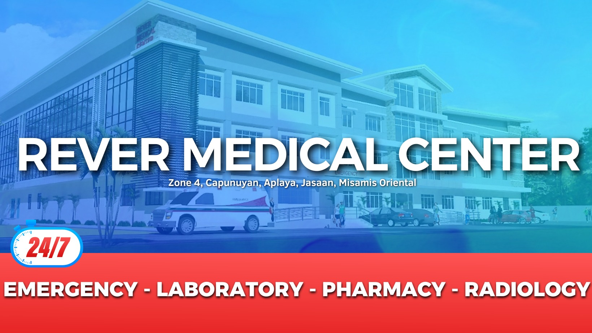
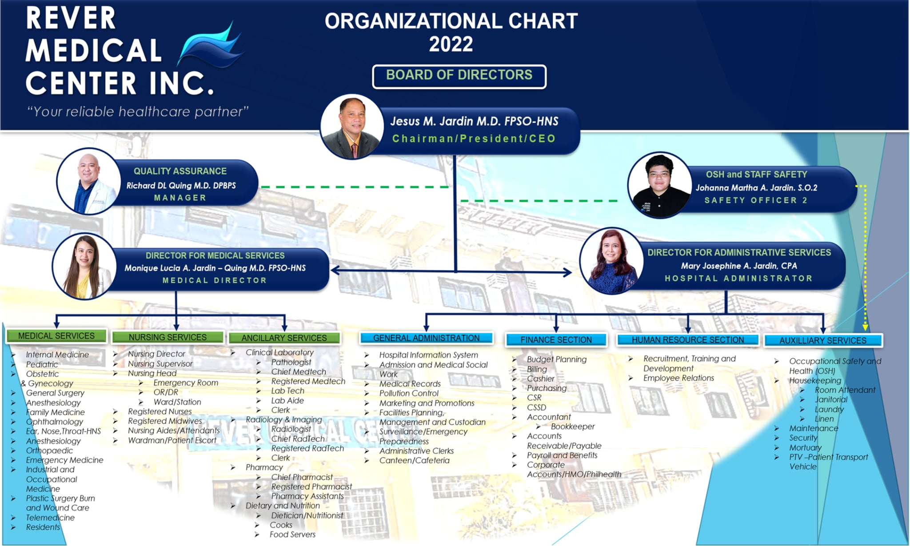

Your Trusted Healthcare Partner
Rever Medical Center Inc. is a DOH-licensed Level 1 General Hospital dedicated to providing reliable and compassionate healthcare. Since 2018, we have been serving the communities of Misamis Oriental with a commitment to excellence.
24/7 Service
Always ready to serve you, day or night.
39-Bed Capacity
A Level 1 hospital equipped for your needs.
Our Location
Zone 4, Aplaya, Jasaan, Misamis Oriental

RMCI Organizational Chart
Click the image to zoom in
EXECUTIVE SUMMARY
REVER MEDICAL CENTER, INC. is a privately owned pioneering 60-bed Level 1 General Hospital located in Aplaya, Jasaan, Misamis Oriental. It formally commenced operations on April 15, 2020. It provides general and specialty healthcare services in the towns of Jasaan, Claveria, Villanueva, Tagoloan, and Balingasag (population three hundred thousand (2015) and growing at rapid rate of 2.7% per annum). At present, patients' profile shows that it has reached as far as Cagayan de Oro City, other towns in Misamis Oriental, Zamboanga, Bukidnon and Butuan. As a Level 1 hospital, it provides In-patient care, Out-patient care, Diagnostic X-ray and Ultrasound services, Clinical Laboratory services, Pharmacy, Operating/Delivery Room services, and Specialty Centers. These services are given by highly trained, dedicated and compassionate professionals. It is the first hospital in the area that provides specialty healthcare services, both medical and surgical, in E.N.T-HEAD and NECK SURGERY, OPHTHALMOLOGY, ORTHOPEDIC and PLASTIC SURGERY, BURN and WOUND CARE and THERAPEUTIC AND DIAGNOSTIC ENDOSCOPY, and INDUSTRIAL AND OCCUPATIONAL MEDICINE. These services are in addition to the general services of Internal Medicine, Obstetrics and Gynecology, Pediatrics and General Surgery. The rapid economic boom of the area due to influx of more big ticket investments at PHIVIDEC and adjoining towns positions the hospital as a service support institution of the community. It is aimed to provide for the healthcare services of the employees of the various companies. With the passage of UNIVERSAL HEALTH CARE LAW, it is expected that more than ninety five percent [95%] of the population will already be covered with health insurance which alone is a very big market to serve. The high level of OFW families in the community is also a potential market because of more disposable income. Cagayan de Oro City is getting more congested with an inherent problem of traffic which will encourage people in the area to patronize local hospital because of ease and accessibility.
The VISION of the hospital is to be a RELIABLE healthcare partner in all stages of patients' life health journey. It aims, the MISSION, is to provide a RELIABLE healthcare services through EMPATHY and VALUABLE patient's ENGAGEMENT providing better health RESULTS and EXPERIENCE. The hospital aims to be competitive by differentiating its services into markets segments like the creation of specialty centers aside from general health care services.
DESCRIPTION OF BUSINESS
The hospital project, REVER MEDICAL CENTER INC. (RMCI) is a pilot project of the corporation, REVER MEDICAL CENTER, INC., a duly SEC registered family corporation. It has already complied with all statutory government requirements like License to Operate from DOH, ECC from DENR, and MUNICIPAL licenses like Business Permits, BIR Registration, Occupancy Permit, Locational Clearances and corresponding Barangay Licenses and Clearances. It is also a member of the Philippine Hospital Association and an Accredited Philhealth Health Care Instution. RMCI Pharmacy is also a PDEA-S3 registered establishment in compliance with the standards in handling basic regulated drug required for hospital operations.
LOCATION
The hospital is located within the municipal highway boundaries of Jasaan and Villanueva, and is providing healthcare services in the towns of Balingasag, Claveria, Jasaan, Villanueva and Tagoloan. The geographic area is a host to industries such as agricultural, forest, steel, metal, chemical, mineral and food processing. This is an agro-industrial area with three (3) big coal power plants located within the vicinity namely Minergy Coal Corporation, STEAG, and FDI. The area is also the location of PHIVIDEC, a 2000 hectare industrial zone, and 2 PEZA accredited sites like Pilipinas KAO and RESINS. Within PHIVIDEC are large steel plants [Philippine Sinter Corporation , 2 power plants, and other manufacturing businesses like San Miguel Corporation, Gardenia, and others. In Tagoloan, the location of the MINDANAO INTERNATIONAL CONTAINER PORT, is transforming the municipality into logistic hub of Mindanao. The presence of adequate power supply makes the area attractive to big manufacturing investments. According to NEDA, a $3.5 billion dollar integrated steel plant from China will be constructed in PHIVIDEC. It is estimated that it will provide 60,000 employment opportunities. The rapid economic boom in the area together with increase in population, better infrastructure, increase level of health awareness among the populace, and minimal competition positions the hospital as a service provider of the community. The hospital is a 7,158 square meter four-story building in a 1,656 square meter lot strategically located in the center of its intended geographic target market. It is an ideal location for a healthcare provider for all the industries within the vicinity.
SERVICES
As a Level 1 General Hospital, RMCI provides In-Patient care, Out-Patient Care, Diagnostic Radiology services, Clinical Laboratory services, Pharmacy, Operating Room services, and Specialty Center. With the implementation of the service delivery network and primary care system under the Universal Health Law, the hospital will be a primary care provider and at the same time, a Level 1 Hospital referral center. With the presence of big industries in the area, REVER MEDICAL CENTER, INC., will be an industrial healthcare provider for both the companies and the employees. As planned, the hospital will establish a mobile clinic to serve the various factories in the locality. Its location, being near industrial zones, will be more accessible to employees. The hospital aims to create centers of excellence in specialty services in E.N.T-HEAD AND NECK SURGERY, OPHTHALMOLOGY, PLASTIC SURGERY, DIAGNOSTIC AND THERAPEUTIC ENDOSCOPY and INDUSTRIAL and OCCUPATIONAL MEDICINE. These centers will be manned by highly trained specialists in each of the specialty fields. The owners and relatives of the institution are Otolaryngologist, Ophthalmologist, Plastic Surgeon, and Endoscopist. This will be the first hospital in the area that will offer specialty care services which is its primary competitive advantage. The specialty centers will be complemented with state of the art equipment like operating eye microscope, lasers, video endoscopy, etc.. It will be a 24/7 business operation being a hospital. It is also the first SMART HOSPITAL in the area. The building is provided with advance information technology infrastructure like LAN, wireless internet, and hospital information system. Likewise, the hospital will have its own oxygen generator with a centralized piping distribution system. This is a productivity investment in terms of immediate availability of quality and cheap oxygen, and will also minimize operating cost.
Procurements of medicines, supplies and fixtures will be based on the needs of the hospital as determined by the following:
1.Therapeutics Committee this committee shall determine the types, kinds and quantity of medicines that will be stocked in the pharmacy. A hospital drug formulary will be created and only drugs listed in the PNDF (Philippine National Drug Formulary) will be procured.
2.Central Supply Committee this committee will determine the stocking of supplies and fixtures.
MANAGEMENT
As a family owned hospital, management of the business is be performed by owners who are also doctors with experienced in hospital management, specialist in their field of Otolarynogology, and into other businesses. The President of the hospital, Dr. Jesus M. Jardin, has 21 years experienced as Medical Director of a tertiary hospital, Capitol University Medical Center. He is also a former president of the Philippine Hospital Association, a former board member of the Province of Misamis Oriental [Chairman of the Committees of Health, Budget and Appropriation, Culture and Arts and Real Properties] and was a member of the Governing Board of the International Hospital Federation. The Medical Director, Dr. Monique Lucia A. Jardin-Quing, is also an ENT-HNS specialist, an active consultant at Capitol University Medical Center. The administrator and Chief Operating Officer, Mrs. Mary Josephine Veronica A. Jardin, is a Certified Public Accountant, a former Accounting Instructor at Xavier University, and a former member of the Municipal Council of the Municipality of Jasaan, Misamis Oriental. The Quality Assurance Department is handled by Dr. Richard De Luna Quing, a Plastic Surgeon and Ms. Johanna Martha A. Jardin, SO2 handles the Occupational Safety and Health matters of the hospital employees and staff. The different clinical departments like Internal Medicine, General Surgery, Pediatrics, and OB/GYN are manned by trained specialists with diplomate and fellowship certifications from their specialty organizations. In the same manner, the radiology and laboratory departments are handled by licensed and trained specialist.
The specialty centers will be manned by highly trained specialist in their fields of specialization such as:
E.N.T-HEAD AND NECK CENTER: DR. JESUS M JARDIN DR. MONIQUE A. JARDIN-QUING
EYE CENTER: DR. MA. THERESA M. JARDIN - MISTULA, et.al.
PLASTIC SURGERY, BURN AND WOUND CARE CENTER: DR. RICHARD DE LUNA QUING
DIAGNOSTIC AND THERAPEUTIC ENDOSCOPY: DR. JESUS M JARDIN DR. MONIQUE A. JARDIN-QUING and VARIOUS SPECIALIST
FINANCIAL MANAGEMENT
Currently, the hospital infrastructure, technology and essential equipment are almost 100% in place82. About 150 million pesos has been invested with 98 million finance by DBP, and the rest are from suppliers and personal investment83. The income of the hospital are generated from In-Patient and Out-patient care which include board/lodging, surgical procedures, ancillary services [pharmacy, radiology and laboratory], emergency room services, mobile clinic and patient transfer vehicle service84. Revenue generation is computed based on the following industry assumptions85:
a. Occupancy Rate is at 80% of Bed Capacity per Day or 80%×60 or 48 bed occupancy per day86.
b. 10% of Bed Capacity per Day is allocated for PhilHealth only (Mandatory) 87
c. Average Length of Stay (LOS) = 3 days 88
d. In-Patient (PhilHealth Reimbursement comprising 50% of Revenue per Case) 89
e. Out-Patient and Specialty Center SURGICAL PROCEDURES/Consultations [PHIC REIMBURSEMENTS per Specialized Case: Ophtha 80%; ENT-50%; Gen. Surgery - 50%; Emergency -50% and Co-Pay of Patient per Specialized Case: Ophtha 20%; ENT - 50%; Gen. Surgery-50%; Emergency - 50%) 90
f. Out-Patient Ancillary Tests and Services
COMPETITIVE ADVANTAGE
What will make the hospital stand up against its competition is the service segmentation it will provide to its target market. With the expertise, training and experience of the healthcare providers in these fields, the creation of a unique medical services like the EN.T-HEAD AND NECK CENTERS, EYE CENTER, PLASTIC SURGERY CENTER, ENDOSCOPY, and INDUSTRIAL AND OCCUPATIONAL MEDICINE will be the unique selling proposition of the hospital. These specialty centers will be the first and only in the area which will be complemented with state of the art equipment. Considering its strategic location within the vicinity of an industrial estate and robust economic development among the adjoining towns, it will position itself as a Level 1 hospital provider in the locality. It will become an industrial healthcare provider for employees of the various companies. Again, with implementation of UNIVERSAL HEALTH CARE LAW, it will become the primary care provider of the community and the first level referral center in the service delivery network.
MARKETING
The target market will be those within the geographic area along the eastern part of Misamis Oriental with special focus on the (main geographic area) towns of Jasaan, Claveria, Villanueva, Tagoloan and Balingasag. This is an agro-industrial area with an increasing population, a robust economy, high employment rate, high OFW communities, and a stable peace and order situation.
SWOT ANALYSIS
STRENGTH A. Top Management (Competence and Experience) a. DR JESUS M. JARDIN - the President, is currently the Medical Director of Capitol University Medical Center and has been for 21 years. Has earned 24 units of Masters in Hospital Administration. He was a former President of the Philippine Hospital Association. The former Board Member of the Province of Misamis Oriental [Chairman Committee of Health and Budget and Appropriation]. He was a former member of the Governing Board of the International Hospital Federation. He is also a stockholder in various companies. b. MRS. MARY JOSEPHINE VERONICA A. JARDIN - a CPA by profession and was Directress of a Preschool and Elementary School, Holy Family School of Misamis Oriental for 15 years. Has earned 24 units of Masters in Hospital Administrator. She is also the owner of MINDANANAO EAR-NOSE-THROAT REHABILITATION CENTER [MENTOR] ; a former instructor at the College of Commerce of Xavier University ; and a former Councilor of the town of Jasaan, Misamis Oriental. c. DR. MONIQUE LUCIA A. JARDIN - QUING is an ENT-HNS Specialist and has earned 24 units in Master of Arts in Hospital Administration. She is an active ENT-HNS consultant in Capitol University Medical Center. d. DR. RICHARD DE LUNA QUING, a Plastic Surgeon and specializes in Burn and Wound Care, handles the Quality Assurance Office. B. MEDICAL STAFF [HIGHLY TRAINED, EXPERIENCE, AND BRANDED] a. The main members of the medical staff are branded practitioners in their fields of specialization who will bring their expertise, experience and competence in the delivery healthcare services. C. FOCUS ON SEGMENTED HEALTHCARE SERVICES a. ENT-HEAD AND NECK CENTER b. EYE CENTER c. PLASTIC SURGERY CENTER d. DIAGNOSTIC AND THERAPEUTIC ENDOSCOPY e. INDUSTRIAL AND OCCUPATIONAL MEDICINE D. SMART HOSPITAL - embedded in the hospital building is an information technology infrastructure which is a productivity area to create seamless information exchange and operating cost. a. LAN [LOCAL AREA NETWORK] b. WIRELESS INTERNET c. HOSPITAL INFORMATION SYSTEM E. OXYGEN GENERATING FACTORY - this is the only Level 1 Hospital in the area with this facility. The oxygen is also piped centrally to all the rooms. F. ALLIANCE WITH CAPITOL UNIVERSITY MEDICAL CENTER - networking with a tertiary hospital makes easier referral for serious cases.
WEAKNESS A. NEW BUSINESS as a pioneering healthcare provider in the area, the challenges of how to increase the level of awareness and actual utilization of the [services] B. DEVELOPMENT OF A CORPORATE CULTURE - as a new hospital with start-up employees, untested operational system, and undetermined clinical outcomes, the challenge is how to inculcate and nurture a culture of competence, safety, compassion, quality, and better outcomes C. TIGHT LABOR MARKET - the current scarcity of Nurses, Radtech and Medtech pose a big challenge in the availability of manpower complement. Government hospitals are offering higher salaries which private hospitals cannot afford. Private hospitals in Cagayan de Oro are now offering higher rates than the minimum wage.
THREATS A. GOVERNMENT REGULATIONS a. DOH REGULATORY MANDATES - these regulations are sometimes difficult to comply because of inherent barriers which hospitals have no control. Example inability to comply with Nursing, RadTech and Medtech ratio because of lack of manpower available in the labor market b. DENR, DILG AND MUNICIPAL MANDATES - there is no synchronized regulations. Sometimes regulations from one government agency to another contradicts. c. HEALTHCARE FINANCING a. LOW CASE RATE PAYMENT- the computation for case rate payment is not any more attuned to the current economic scenario. The margin of profit is almost eaten up by inflation. b. DELAYED IN THE PAYMENT OF PHIC REIMBURSEMENT- lately PHIC has been delayed in paying their obligations due to financial constraints. This will greatly affect the liquidity of hospitals, and will increase the cost of money. c. DELAYED IN PAYMENT OF DSWD/PCSO/LGU HOSPITAL ASSISTANCE B. COMPETITION a. The possibility that PHIVIDEC will put up its own hospital. b. Advent of a Level 1 Provincial Hospital in Villanueva, Misamis Oriental
OPPORTUNITIES A. PASSAGE OF UNIVERSAL HEALTH CARE. This mean that more patients are covered with PHIC which is a big market to serve. B. RAPID INDUSTRIALIZATION OF THE AREA -the influx of big industries in the area has improved employment rate, more disposable income and employees' health benefits. C. BETTER EDUCATION D. CHANGE IN DEMOGRAPHICS E. INABILITY OF THE LOCAL GOVERNMENTS TO DELIVER HEALTHCARE SERVICES F. AVAILABILITY OF HOSPITAL FINANCIAL ASSISTANCE FROM DSWD, PCSO, LGU
The unique selling proposition of the hospital is the specialty care centers that is established and will be further developed and improved. The creation of the E.N.T-HEAD AND NECK CENTER, EYE CENTER, PLASTIC SURGERY CENTER AND ENDOSCOPY CENTER and INDUSTRIAL and OCCUPATIONAL MEDICINE is the primary differentiating market segments of the business. The services of these specialty centers will be the main product menu of the hospital which will be provided to health consumers along the eastern part of Misamis Oriental. These specialty care centers will be the first and only in the locality, and it will be positioned as centers of excellence. The specialty centers will be manned by highly trained, experienced, and competent specialists. To ensure high level of quality and safety, the centers are provided WITH STATE OF THE ART equipment like MICROSCOPE, VIDEO ENDSCOPY SYSTEM, etc. The centers are also located in ergonomically designed rooms with embedded information technology infrastructure.
To promote, increase level of awareness and maximize utilization of services, the following strategic activities are now implemented:
A. EYE CENTER: [ The assumption is anchored on increase population of senior citizens which will translate to high incidence of degenerative diseases like Cataract, Retinal diseases and Glaucoma. These Senior Citizens are financially protected because of automatic inclusion into the PHIC] 1. Tie-up with Senior Citizens 2. Tie-up with Local Government Units 3. Intensive Linkages with Community Health Workers like Barangay Health Workers and Rural Health Nurses 4. Networking with companies and HMOs 5. Case Rate only (PHIC) payments for 4Ps and LGU sponsored patients 6. Special Packages (Lower Co-Payments) for Middle Income Patients 7. Free Screening Clinics in Various Barangays in coordination with Barangay Government Units 8. Free Transportation if with MOA with Municipalities
B. E.N.T-HEAD AND NECK SURGERY: [The assumption is based on the branding that the main owner of the hospital has created for the past thirty years in his practice as an otolaryngologist]. 1. Same strategic activities as in the Eye Center 2. Strengthened hearing and vestibular rehabilitation services like providing free hearing test and hearing aids to indigent patients (Public Relations Programs to Promote Services) 3. Regular "PASILIP PROGRAM-VIDEOENDOSCOPY OF THE THROAT" for teachers in the community who are exposed to hazards of voice abuse.
C. PLASTIC SURGERY CENTER: [The assumption is based on the need of the area, and the owners are facial plastic surgeons and general plastic surgeon.] 1. Same strategic activities as in the Eye Center 2. Networking with international non-government organizations which are involved in cleft-lip and palate surgeries like SMILE TRAIN, ROTARY CLUBS AND PHIL. BAND OF MERCY. 3. Massive information campaign on the availability of a plastic surgeon who can perform micro-vascular operation (one and only in Mindanao).
D. DIAGNOSTIC AND THERAPEUTIC ENDOSCOPY: [The assumption is based on the availability of video endoscopy system and doctors who are trained to do it.] 1. Same strategic activities as in the Eye Center 2. Massive information campaign with emphasis on the being the only endoscopy provider in the area.
REVER MEDICAL CENTER, INC., as a Level 1 Hospital, provides In-Patient Care, Out-Patient Care, Diagnostic X-ray Services and Clinical Laboratory Services to all ages of patients. The location of the hospital is a magnet in the locality because of its accessibility. It is also a SMART hospital having information technology infrastructure embedded in the building like LAN and wireless internet, and also a hospital information system. The hospital might also be considered a green hospital because it has its own rain water catchment facility and water source from natural spring. It is also the hospital in the locality that will have its own oxygen generating factory with centralized piping system to all rooms. These attributes are internal strengths which will lower the hospital operating costs and eventually lower its pricing which is a competitive advantage considering the economic level of the residents of the locality.
To enhance the utilization of the services of a Level 1 hospital, the strategic activity will be focused on an ideal pricing scheme. The pricing mechanism will be lower but still profitable considering the expected lower operating cost. The procurement of medicines and supplies will be rationalized as to secure safe and quality items. With the implementation of the Universal Healthcare, it is expected that 90% of the population will already be covered with PHIC. This will provide financial protection to a lot of patients. PHIC coverage alone is a gargantuan market to serve. The hospital as one of its strategic marketing programs is to accept patients with PHIC reimbursements as the only payment. This will especially be promoted among 4P's and LGU sponsored patients. This program, aside from revenue generating, will also support and work in achieving the goal of the government and that is the achievement of the universal health care. It is part of the social corporate responsibility of the hospital to build better community through affordable and quality healthcare.